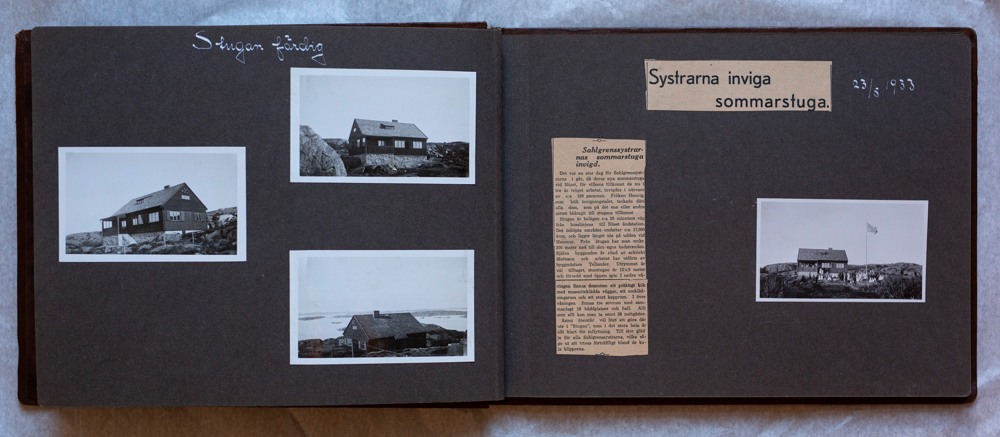

Uppslag 9
{kind=link}


Systrarna inviga sommarstuga. Sahlgrenssystrarnas sommarstuga invigd. Det var en stor dag för Sahlgrensystrarna igår, då deras sommarstuga vid Näset, för vilkens tillkomst de nu i tre år träget arbetat, invigdes i närvaro av c.a. 180 personer. Fröken Hennig, som höll invigningstalet, tackade däri, alla dem som på det ena eller andra sättet bidragit till stugans tillkomst. Stugan är belägen c.a. 20 minuters väg från busslinjens till Näset ändstation. Det inköpta området omfattar c:a 17,000 kvm, och ligger längst ute på udden vid Hammar. Från stugan har man c:a 200 meter ner till den egna badstranden. Själva byggnaden är ritad av arkitekt Mattson och arbetet har utförts av byggmästare Tellander. Utrymmet är väl tilltaget, storstugan är 12*5 meter och försedd med öppen spis. I nedre våningen finns dessutom ett präktigt kök med masoniteklädda väggar, ett omklädningsrum och ett stort kapprum. I ovanvåningen finns tre sovrum med sammanlagt 18 bäddar och hall. Allt som allt kan man ta emot 38 nattgäster. Ännu återstår väl litet att göra därute i "Stugan", men i det stora hela är allt klart för inflyttning. Till stor glädje för alla Sahlgrensystrarna, vilka sågo ut att trivas förträffligt bland de kala klipporna.